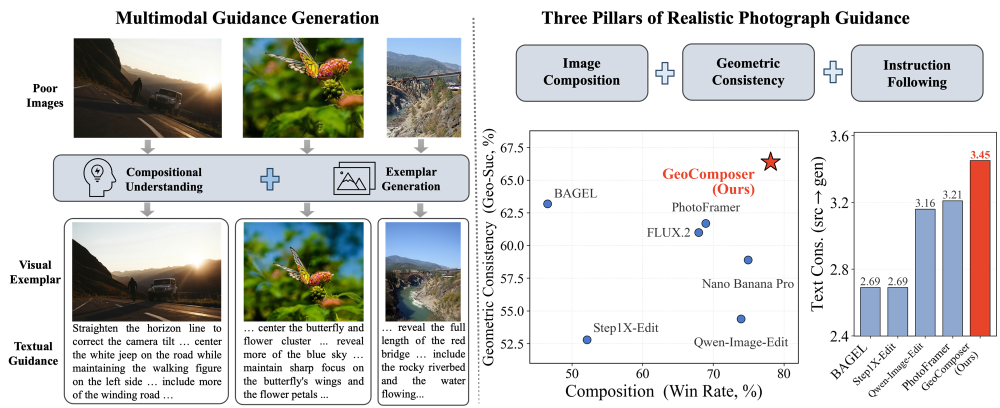
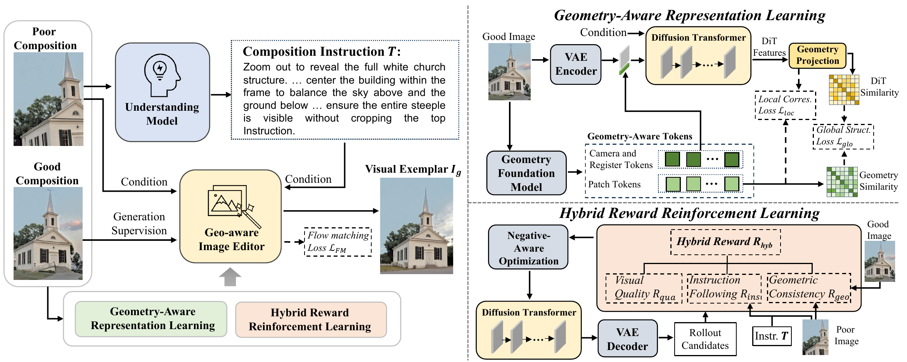
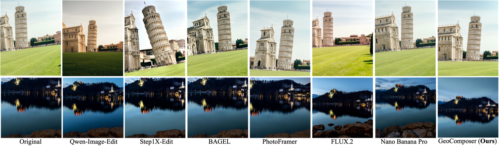
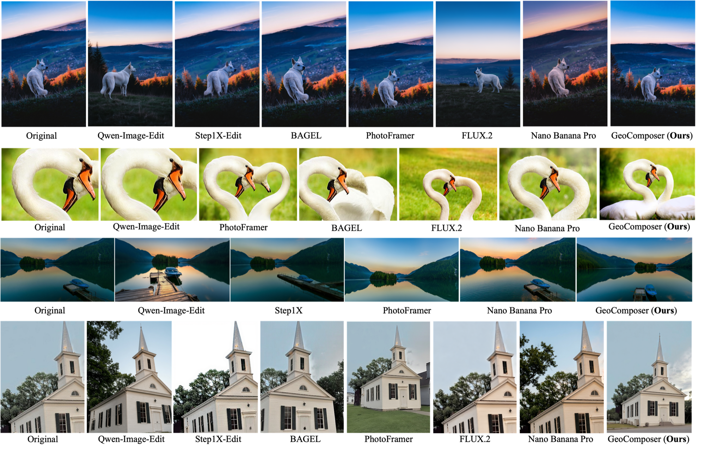
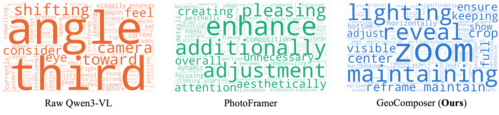

Figure 1. Given a poorly composed photograph, GeoComposer generates textual guidance together with a geometry-consistent visual exemplar as the composition improvement guidance, achieving the best balance between composition quality and geometric consistency among existing methods.

Figure 2. The overall framework of GeoComposer. A composition understanding model analyzes the poorly composed input and produces textual guidance, which conditions a geometry-aware image editor to synthesize a well-composed visual exemplar. Stage I distills geometric priors from a visual geometry foundation model into the editor via geometry-aware representation learning; Stage II further optimizes the editor with hybrid reward-guided reinforcement learning.
| Method | Composition | Image Quality | Geo. Consistency | Text Guidance | Human | ||||
|---|---|---|---|---|---|---|---|---|---|
| WinRate (%) ↑ | PF-ass ↑ | QAlign ↑ | DeQA ↑ | Geo-Suc (%) ↑ | MET3R ↓ | src→gen ↑ | src→GT ↑ | Overall ↑ | |
| BAGEL | 46.5 | 2.588 | 2.823 | 3.598 | 63.2 | 0.246 | 2.69 | 2.57 | 43.3 |
| Step1X-Edit | 52.1 | 2.704 | 2.870 | 3.496 | 52.8 | 0.231 | 2.69 | 2.30 | -- |
| Qwen-Image-Edit | 73.9 | 2.987 | 3.272 | 3.869 | 54.4 | 0.257 | 3.16 | 2.60 | 59.4 |
| FLUX.2 | 67.9 | 2.948 | 3.133 | 3.820 | 61.0 | 0.233 | -- | -- | 40.6 |
| PhotoFramer | 68.9 | 2.957 | 3.043 | 3.812 | 61.7 | 0.231 | 3.21 | 2.69 | 63.3 |
| Nano Banana Pro | 74.9 | 3.081 | 3.323 | 4.041 | 58.9 | 0.191 | -- | -- | 63.9 |
| GeoComposer (Ours) | 78.1 | 3.133 | 3.381 | 4.012 | 66.4 | 0.184 | 3.45 | 3.28 | 85.6 |
Table 1. Quantitative comparison with state-of-the-art methods on the constructed validation set. Blue bold and underline mark the best and second-best results; "--" denotes unavailable results.

Figure 3. Qualitative comparison with state-of-the-art methods.

Figure 4. Additional qualitative comparison on diverse scenes. In each row, the leftmost image is the poorly-composed input and the rightmost is the result of GeoComposer.

Figure 5. Word distribution of the textual guidance produced by each composition understanding model over the validation set.
If you find this work useful, please cite our paper: